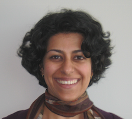
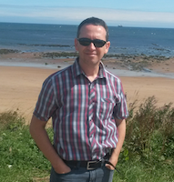
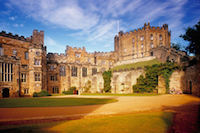

August 16-18, 2016
8th International Workshop on Bio-Design Automation
Same day registation available.
Detailed program available! Proceedings now available.
Keynote Speakers: Dr. Amoolya Singh and Prof. Natalio Krasnogor
About IWBDA
The Eighth International Workshop on Bio-Design Automation (IWBDA) will bring together researchers from the synthetic biology, systems biology, and design automation communities to discuss concepts, methodologies and software tools for the computational analysis and synthesis of biological systems.
The field of synthetic biology, still in its early stages, has largely been driven by experimental expertise, and much of its success can be attributed to the skill of the researchers in specific domains of biology. There has been a concerted effort to assemble repositories of standardized components; however, creating and integrating synthetic components remains an ad hoc process. Inspired by these challenges, the field has seen a proliferation of efforts to create computer-aided design tools addressing synthetic biology's specific design needs, many drawing on prior expertise from the electronic design automation (EDA) community.
The IWBDA offers a forum for cross-disciplinary discussion, with the aim of seeding and fostering collaboration between the biological and the design automation research communities.
IWBDA is organized by the non-profit Bio-Design Automation Consortium (BDAC). BDAC is an officially recognized 501(c)(3) tax exempt organization.
Topics of interest include:
- Design methodologies for synthetic biology.
- Standardization of biological components.
- Automated assembly techniques.
- Computer-aided modeling and abstraction techniques.
- Engineering methods inspired by biology.
- Domain specific languages for synthetic biology.
- Data exchange standards and models for synthetic biology.
Sponsors
Design

Workflow

Tool
Class

Algorithm


Information about sponsorship is available here.
Call for Papers
Abstracts should be two pages long and referenced, following the ACM SIG Proceedings templates at www.acm.org/sigs/publications/proceedings-templates. Inclusion of figures is encouraged. Indicate whether you would like your abstract considered for a poster presentation, an oral presentation, or both. Include the full names, affiliations and contact information of all authors. Abstracts should be submitted in pdf format and should not exceed two pages.
Abstracts will be reviewed by the Program Committee. Those that are selected for oral and poster presentations will distributed to workshop participants and posted on the workshop website.
Call For Abstracts full pdf
Submit your abstracts here www.easychair.org/conferences/?conf=iwbda-2016
Scholarships
IWBDA Scholarships are available for students, postdocs, and young researchers. Applications were due April 30, 2016. We currently have more applications than available funding. Please see this PDF for details.
Allan Kuchinsky IWBDA Scholarship
This year IWBDA will be soliciting applications for the 2nd annual Allan Kuchinsky Internation Workshop on Bio-Design Automation Scholarship. Allan was a tremendous supporter of both synthetic biology as well as design automation. His contributions to projects such as Cytoscape and Eugene as well as numerous Agilent efforts was crucial in helping academic and industrial researchers develop state-of-the-art technologies and tools to lay the foundation for this field. This scholarship in some small measure attempts to recognize his tireless efforts by highlighting a student who shares Allan's vision for the field. This scholarship will provide support for one recipient to attend IWBDA (registration, airfare, hotel, and small travel stipend) along with a recognized poster presentation slot. Interested individuals should provide the following: IWBDA abstract, resume/CV, essay, and recommendation letter. For details, including how to apply, please see this PDF.
The Allan Kuchinsky scholarship is generously sponsored by
Agilent.

BDAthlon Competition
BDAthlon is a programming contest, in which teams are given a set of programming challenges and then work to solve these challenges as teams. BDAthlon questions will be from the following five areas:
- Specification and design;
- assembly and build;
- simulation and verification;
- standards and exchange; and
- data and storage.
Teams are composed of 2-3 people. Preference is given to graduate students but postdoctoral and undergraduate student members can be permitted. Selected teams will receive a travel stipend, up to $1000 PER TEAM. Registration to IWBDA is also included. The winning team will be awarded a certificate(s) along with a cash prize of $500.
Teams
We're happy to announce that the following teams will be competing in the BDAthlon:
- iGEM Leiden
- CIDAR House Rules
- The Bristol Bug Bashers
- J3
- Utah Utes
Accommodations
Dormitory Option
We have reserved a block of dormitory housing as a low-cost option. Rooms are available from August 14-19. Rooms must be reserved by July 11, 2016. Here are some details about the dormitory option:
- The accommodation is in Marris House.
- Reception areas in these halls are not staffed 24/7. You MUST arrive when the reception is open (approx. 8am to 1pm, see website).
- On the weekend or after 1pm, you will need to pickup the key at the security office (open 24 hours). See map.
- Check-out time is 10am.
- It is a 20 minute walk to the conference from the dormitory.
- The accommodation is split into flats with 6 bedrooms per flat with a shared kitchen.
- We will keep each flat single gender
- Breakfast to Go will provided in each kitchen in the mornings.
- A limited number of rooms is available. First come, first served.
- The per person room rate per night is £27.17.
- Rooms must be reserved and booked using the link below.
- Payments will be made directly to IWBDA/BDAC, who will pay for the block of rooms. Payments will be due on or around the reservation deadline.
Hotel Option
Reservations can be made using the following link:
ACS Synthetic Biology IWBDA 2016 Special Issue
We would like to invite all attendees to submit original work to the ACS Synthetic Biology “IWBDA 2016” Special Issue. ACS Synthetic Biology has the highest editorial standards, offers rapid publication of your research findings and imposes NO author submission, page, color, or cover art charges. We are looking for high quality submissions, for peer-review, as either short Letters or full-length Articles. The submission deadline is September 30, 2016.
If you wish to submit your research to the ACS Synthetic Biology “IWBDA 2016” Special Issue, please see the ACS Synthetic Biology Invitation for instructions on preparing your manuscript.
Key Dates
- Abstract submission deadline:
April 15, 2016April 22, 2016 - Scholarship submission deadline:
April 30, 2016 - Abstract and scholarship notification:
May 13, 2016 - BDAthlon team application due:
May 20, 2016 - Dormitory reservation deadline: July 11, 2016
- SBOL Workshop: August 15, 2016
- BDAthlon programming contest: August 16, 2016
- Main IWBDA workshop: August 17-18, 2016
- ACS Synthetic Biology Special Issue deadline: September 30, 2016
Venue
The following Google map contains the locations of: - Centre for Life, Centre for Bacterial Cell Biology, Marris House, Barras Building - University security. Google map. Also useful is a map of the Newcastle University Campus.
If you are staying in Marris House, here is the University Security contact to collect the keys for the accommodation.
The SBOL Workshop and BDAthlon will be both at the Centre for Bacterial Cell Biology, Newcastle University. IWBDA will be held at the Centre for Life. The addresses are below.
Centre for Bacterial Cell Biology, Newcastle University
The Centre for Bacterial Cell Biology
Baddiley-Clark Building
Medical School
Newcastle University
Richardson Road
Newcastle upon Tyne
NE2 4AX
United Kingdom
Centre for Life
Centre for Life Conferences
Life Conference and Banqueting
International Centre for Life
Times Square
Newcastle upon Tyne
NE1 4EP
United Kingdom
Registration
Scholarship applicants should wait until after they find out about their scholarship to register
Please note that registration includes the annual dinner and other activities on Wednesday, August 17, 2016.
Please contact us with any registration questions.
Keynote Speakers
Amoolya Singh
Dr. Amoolya Singh is a computational biologist and Senior Scientist at Amyris. She leads Amyris R&D's Scientific Computing group, whose work includes innovations in genotype representation and data visualization, building mathematical and statistical models to analyze high-throughput, multivariate genotype and phenotype data; metabolic modeling and design-of-experiments to perturb microbial biochemical pathways and identify bottlenecks therein; and statistical process control to accelerate Amyris' design-build-test-learn cycle.
Amoolya obtained a bachelor's degree with honors at Carnegie Mellon double majoring in Biology and Computer Science; and a Ph.D. in computational biology from UC Berkeley jointly advised by Adam Arkin (Bioengineering) and Richard Karp (Math/CS). Between degrees, she worked as a software engineer at an Internet startup, a multinational wireless telecommunications firm, and a Wall Street investment bank. Prior to joining Amyris, Amoolya completed a postdoctoral fellowship at the European Molecular Biology Lab in Heidelberg, Germany (with Peer Bork) and a Computational & Life Sciences fellowship at Emory University (with Bruce Levin) in the fields of comparative genomics and metagenomics, population genetics, and experimental evolution.
Natalio Krasnogor
Prof. Natalio Krasnogor is Professor of Computing Science and Synthetic Biology, co-directs Newcastle's Interdisciplinary Computing and Complex BioSystems (ICOS) research group and is director of the Centre for Synthetic Biology and the Bioeconomy (CSBB). Prof. Krasnogor holds a prestigious EPSRC Leadership Fellowship in Synthetic Biology, is the overall lead in the EPSRC Synthetic Biology ROADBLOCK project involving Newcastle, Nottingham, Sheffield, Warwick and Bradford Universities that seeks to develop in silico and in vivo techniques for engineering biofilms. He leads the "Synthetic Portabolomics: Leading The Way at the Crossroads of the Digital and Bio Economies" EPSRC project.
With expertise in Synthetic Biology, Complex Systems and Machine Intelligence, Prof. Krasnogor gave several keynote talks (e.g., IEEE CEC, PPSN, GECCO); has >170 publications (H-index 37), with many of his papers in the top 0.1% and 1% for number of citations in computing science and has published also in top tier journals such as Nature Biotech, Nature Chemistry, and PNAs. He won several best papers prizes as well as Bronze, Silver and Gold awards of the American Computing Society's (ACM) HUMIES award for human-competitive results that were produced by any form of genetic and evolutionary computation and an ACM's Impact award. From 2012 to 2014 he was the Science Director of the European Centre for Living Technologies (Italy), was distinguished visiting professor at Ben Gurion University (Israel) in 2009 and Weizmann Institute of Science (Israel) in 2010, 2012, and 2013.
Annual IWBDA Dinner
Please join us for our Annual IWBDA Dinner taking place at Durham Castle on Wednesday, August 17th! Transportation will be provided to and from the event from the main IWBDA venue, the Centre for Life. Attendees will be asked to register for the dinner when they purchase their ticket for IWBDA. Prior to dinner, we will enjoy a guided tour of the 900-year old Durham Castle and gain entry to Durham Cathedral, both of which are part of the Durham World Heritage Site. After the tour of the castle is finished, attendees will have the option of exploring Durham Cathedral prior to enjoying dinner together.
Coaches will leave the Centre for Life at 3:40 PM and leave the dinner to return at 10:30 PM.
If you have any questions, please contact the IWBDA Executive Committee (email: iwbda-exec AT lists.bio-design-automation.org).
Organizing Committee
Contact us at: iwbda-exec AT lists.bio-design-automation.org
- Co-General Chair - Anil Wipat, Newcastle University
- Co-General Chair - Pietro Lio', University of Cambridge
- Program Committee Chair - Chris French, The University of Edinburgh
- Finance Chair - Traci Haddock, iGEM Foundation
- Co-Local Chair - Goksel Misirli, Newcastle University
- Co-Local Chair - Harold Marc Andre Fellermann, Newcastle University
- Co-Local Chair - Claire Smith, Newcastle University
- Publication Chair - Avi Robinson-Mosher, Harvard University
- Web Chair - Aaron Adler, BBN Technologies
- Past General Chair - Douglas Densmore, Boston University
- Past Finance Chair - Traci Haddock, iGEM Foundation
- Past Program Committee Chair - Jacob Beal, BBN Technologies
- Past Local Chair - Eric Klavins, University of Washington
- Past Local Chair - Traci Haddock, iGEM Foundation
- Past Web Chair - Aaron Adler, BBN Technologies
- Past Publication Chair - Swati Carr, Boston University
Email List
Sign up for the announcements email list here.
Related Synthetic Biology Conferences
- The Third International Workshop on Mammalian Synthetic Biology (mSBW3.0) Conference: May 22-23, 2016 in Cambridge, MA
- Synthetic Biology: Engineering, Evolution & Design (SEED) Conference: July 18-21, 2016 in Chicago, IL
- iGEM 2016 Competition and Giant Jamboree October 27-31, 2016 in Boston, MA
Past Years
- 8th International Workshop on Bio-Design Automation (IWBDA 2016): Newcastle University, Newcastle upon Tyne, UK, August 16-18, 2016
- 7th International Workshop on Bio-Design Automation (IWBDA 2015): Seattle, WA, August 19-21, 2015
- 6th International Workshop on Bio-Design Automation (IWBDA 2014): Boston, MA, June 11-12, 2014
- 5th International Workshop on Bio-Design Automation (IWBDA 2013): Imperial College, London, UK, July 12-13, 2013
- 4th International Workshop on Bio-Design Automation (IWBDA 2012): Moscone Center, San Francisco, CA, July 3-4, 2012
- 3rd International Workshop on Bio-Design Automation (IWBDA 2011): San Diego Convention Center, San Diego, CA, June 6-7, 2011
- 2nd International Workshop on Bio-Design Automation (IWBDA 2010): Anaheim, CA, June 14-15, 2010
- 1st International Workshop on Bio-Design Automation (IWBDA 2009): Moscone Center, San Francisco, CA, July 27, 2009